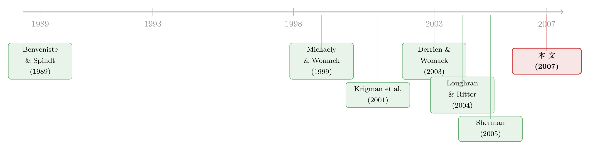

为什么「贵」的承销方式反而赢了？——新股发行里的一笔「分析师彩虹屁」暗账
本文读的是 Degeorge, Derrien & Womack (2007, RFS)：在法国这个同时跑过拍卖和簿记建档两套新股发行机制的天然实验场里，作者发现——簿记建档 (bookbuilding) 之所以打败了更便宜的拍卖 (auction)，靠的不是更好的定价，而是一份心照不宣的「分析师覆盖」承诺。承销商用簿记建档把发行人「绑」进一个利益交换：你多付承销费，我（以及被我拿捏住的其他券商）多给你写报告、多给买入评级、跌了还给你补一针「强心剂」。可这些吹捧，对发行人其实并没有创造可观测的价值。
1 一个赔本买卖的谜题
先说一个让公司金融学者们挠头多年的事实。
把一家公司推上市，全世界主流的做法叫 簿记建档 (bookbuilding)：承销商先定一个价格区间，带着发行人去路演 (road show)，一家家机构问询、收集认购意向，最后由承销商全权裁量地定价、配售。它的对手叫 拍卖 (auction)：投资者直接提交限价订单，价格和份额由市场出清决定，承销商几乎插不上手。
理论上，拍卖是个好东西。Biais, Bossaert & Rochet (2002) 和 Biais & Faugeron-Crouzet (2002) 证明，设计良好的拍卖机制完全可以低成本地把投资者的信息榨取出来、并打进发行价——这恰恰是当年 Benveniste & Spindt (1989) 拿来夸簿记建档的那个优点。更扎心的是实证：Derrien & Womack (2003) 和 Kaneko & Pettway (2003) 在法国和日本的数据里都发现，拍卖的抑价 (underpricing) 比簿记建档更低，尤其在「热」的新股市场里。抑价是发行人实打实让出去的钱，拍卖还便宜，直接承销费也更低。
那么问题来了——
如果拍卖能让发行人少花钱、多融资，为什么全世界的发行人都在抛弃拍卖、拥抱簿记建档？在法国，1990 年代两种机制平分秋色，到了 2000 年以后拍卖几乎绝迹；在日本，簿记建档一开放，拍卖迅速消失。美国的 W. R. Hambrecht 想用荷兰式拍卖抢市场，多年下来连个像样的份额都没拿到。
这就是本文要解的谜。它给的答案，作者称作 「分析师炒作」假说 (analyst hype hypothesis)。
2 核心猜想：一笔心照不宣的交换
作者的猜想，一句话就能说清：
簿记建档不是一桩单纯的「卖股票」生意，它是一份默契契约。 发行人之所以心甘情愿付更高的直接和间接成本，是因为他们买到了一样拍卖给不了的东西——更多、更友好的分析师覆盖 (analyst coverage)。
为什么发行人这么在乎分析师？这不是作者拍脑袋。Krigman, Shaw & Womack (2001) 在一份「发行人为何在 IPO 和增发之间更换承销商」的调查里发现，换承销商最重要的理由，就是为了拿到更好的分析师覆盖。Rajan & Servaes (1997) 发现分析师跟踪强度和抑价正相关；Cliff & Denis (2003) 顺着这条线得出一个著名的论断——发行人是在用抑价「购买」分析师覆盖。Aggarwal, Krigman & Womack (2002) 干脆建了个模型：发行人故意抑价制造「信息动量」，把股价撑到锁定期结束、自己第一次能套现的那一刻。
于是逻辑闭环了：发行人想要覆盖，而只有簿记建档能把覆盖「打包」进发行流程——因为只有簿记建档赋予承销商两样东西：一是承销商自家分析师的笔；二是配售份额的完全裁量权，这把裁量权能让他「拿捏」住整个券商圈。
接着，一个自然的问题是：这份「契约」如果真存在，它应该在数据里留下什么样的指纹？作者把它拆成了四条可检验的预测。相对于拍卖的新股，簿记建档的新股，其关联分析师 (affiliated analyst，即主承销商旗下的分析师) 应当在上市后一年内：(i) 写更多研报；(ii) 出更多评级；(iii) 给更友好的评级；(iv) 在股价表现差时反而出更多评级——也就是所谓的「强心剂 (booster shots)」。
第四条最微妙，我们留到后面专门讲。
3 为什么是法国？
要检验这个假说，你需要一个地方——簿记建档和拍卖同时存在，发行人可以选。
美国不行，那里簿记建档几乎是唯一选项（截至 2005 年 9 月，美国全部的拍卖 IPO 只有 W. R. Hambrecht 做的 14 单和 Google 一单，而同期簿记建档有几百单）。但法国恰好提供了这块理想试验田。历史上法国有两套机制：Offre à Prix Minimal（一种拍卖）和 Offre à Prix Ferme（固定价格）。1993 年，监管当局又把簿记建档开放给了发行人。有那么几年，几种机制并存——这就是作者锁定 1993 年 1 月到 1998 年 8 月 的原因，这段时间里两种机制使用频率大致相当。
还有一个法国特有的制度细节，对识别至关重要：法国没有美国那种「静默期」(quiet period)。在美国，承销商要等 IPO 后几周才能开始覆盖，于是分析师的初评全挤在静默期结束那一刻（这正是 Bradley, Jordan & Ritter (2003) 研究的现象）。法国没有这道闸门，分析师从 IPO 当天甚至更早就能开口——这让「覆盖」这个变量的时点更干净、噪声更少。
（关于美国静默期结束后分析师那一波「彩虹屁」到底值不值钱，可参见《上市之后，分析师的「彩虹屁」到底值不值钱？》。）
4 数据与识别
样本。 1993–1998 年法国交易所上市、用了两种机制之一的 204 单 IPO，其中簿记建档 114 单、拍卖 90 单。作者把样本限制在 Second Marché 和 Nouveau Marché（剔除了规模差异太大、且只有 17 单的 Premier Marché）。发行特征来自招股书，价格来自 Euronext，成交量和买卖价差来自 Datastream。
关键变量。 分析师评级来自 I/B/E/S 的 analyst-by-analyst「明细」库——全样本共 845 条评级，平均每单约 4 条（作为对照，Bradley, Jordan & Ritter (2004) 报告美国 1999–2000 年平均每单 11 条）。评级按 I/B/E/S 编码：1 强烈买入、2 买入、3 持有、4 跑输、5 卖出。研报数量来自 Thomson 的 Investext 库。增发信息则是作者从 Euronext 手工收集的 IPO 后 5 年内的 SEO 记录。
这里有一个绕不过去的识别难题：簿记建档的公司和拍卖的公司，本来就不一样。看一眼描述统计就知道——簿记建档的公司平均更大（市值 567 vs 287 百万法郎）、向公众出售的股份比例更高（28.74% vs 14.36%）、付的承销费也更高（均值 7.03% vs 4.67%，中位数 7% vs 2.5%）。Nouveau Marché 上 61 单全部用了簿记建档（拍卖 0 单），而它专门面向年轻成长型公司。
所以，如果你只是简单地比较两组的分析师覆盖，你根本分不清：覆盖多到底是因为机制（簿记建档真的「买」来了覆盖），还是因为公司本来就不一样（大公司、成长股，本来就该有更多分析师跟）。
作者的应对，是在回归里层层控制公司与承销商特征（规模、行业、交易所、承销商身份等），并且——这是更聪明的一步——他们去检验那个最难用「选择效应」解释的预测：强心剂。
5 反转：那一针「强心剂」
我们退一步想想。「簿记建档的公司被覆盖得更多」，一个怀疑论者总能反驳：因为承销商挑了最好的发行人去做簿记建档，好公司当然分析师多。这个「选择假说」很难证伪。
但「强心剂」不一样。
所谓强心剂 (booster shots)，指的是在股价表现糟糕之后，分析师反而发出正面评级。请注意这个行为的反直觉之处：一只股票跌了，一个诚实的、采取「局外人视角 (outside view)」的独立分析师，要么沉默，要么下调评级。只有当分析师有动机去托底时，他才会在下跌后逆势喊买。这种行为几乎无法用「这是只好股票」来解释——好股票为什么要在下跌后被特意吹捧？
作者的发现干净利落：关联分析师会给近期的簿记建档新股打强心剂，而对拍卖的新股完全没有这种行为。 这正是 Michaely & Womack (1999) 在美国样本里记录的那种利益冲突的法国翻版——主承销商的分析师比独立分析师更看多自家承销的股票。
这里作者还顺手回应了一个温和的对立解释，即 Kahneman & Lovallo (1993) 的「局内人视角」(inside view)：关联分析师就像「孩子永远是自己的好」的父母，天然在一个狭窄框架里高看自家 IPO，所以更乐观。但作者指出——如果只是局内人视角作祟，那簿记建档和拍卖之间不该有差异（两种机制下，分析师对「自家孩子」的偏爱应该一样）。可数据里偏偏有系统性差异。于是，差异本身就成了「利益冲突」而非「认知偏差」的证据。
6 更狠的一手：连「外人」也被拿捏
如果故事到这里就结束，它还只是「主承销商自吹自擂」。但本文真正关键的一步，是揭示承销商如何把手伸向不属于它的分析师。
机制还是那把配售裁量权。作者讲了一个极简的博弈：
设有投行 A 和 B。A 刚把公司 X 推上了市，下个月还要推公司 Y。B 既不是 X 的副承销商，也别想做 Y 的副承销商。但 B 替自己的客户在 Y 的发行里下了单，它眼巴巴盼着下个月能从 A 手里分到 Y 的份额。怎么讨好 A？很简单——给 A 刚承销的公司 X 出一份正面评级。
于是预测变成：当某承销商即将再用簿记建档推下一单时，那些与它无关联的「外部」分析师，会对它手上正在覆盖的簿记建档新股给出格外友好的评级。
作者找到了这个指纹：非关联分析师确实会在「承销商即将再推一单」时，对其近期 IPO 出具正面评级——而拍卖的承销商身上没有这种现象。拍卖里承销商没有配售裁量权，也就没有可以「拿捏」别人的筹码，这条暗线自然断掉。
这一段，和美国后来曝出的丑闻遥相呼应：2004 年，七家金融机构因为收了承销商的钱、却以「无关联」名义出研报而未披露，向监管层支付了 365 万美元和解金。本文等于在更早、更干净的数据里，把这套「投桃报李」的机制结构性地刻画了出来。
7 它到底有没有给发行人创造价值？
走到这里，一个尖锐的问题浮出水面：好吧，簿记建档确实买来了更多吹捧——但这些吹捧值钱吗？发行人多花的那笔钱，换来了真实的好处吗？
作者的回答是否，而且这正是全文最有冲击力的地方。他们做了一连串稳健性检验来排除「簿记建档其实是好东西」的可能：
- 长期表现：book-built 的新股并没有比拍卖的新股有更好的长期表现。如果簿记建档真的筛出了好公司，长期回报理应更高，但没有。
- 发行估值：book-built 的新股在 IPO 时是以更低的估值倍数定价的——这与「优质公司溢价发行」恰恰相反。
- 后市波动：另一种辩护说，簿记建档让承销商控制信息、协调投资者，从而降低了发行风险；而拍卖里投资者兴趣和信息生产更不可控。但作者发现，拍卖的后市表现并不比簿记建档更不稳定。
把这三块拼起来，结论就很硬了：簿记建档买来的友好覆盖，对发行人没有可观测的价值——既没换来更高的长期回报，也没换来更高的发行估值，也没换来更低的风险。它更像是发行人为「被吹捧」这件事本身买的单。
那为什么发行人还前赴后继地选簿记建档？这就接到了 Loughran & Ritter (2004) 的 「分析师渴求」假说 (analyst lust)：1990 年代（尤其后半段）发生了一次转变，发行人对分析师覆盖的权重越来越高——一部分原因是估值高企时，预期增长率的一点点变化会带来卖价的巨大变化，于是覆盖变得格外金贵。本文等于说：这场转变不止发生在美国。面对「拍卖（低成本、低覆盖）」和「簿记建档（高成本、高覆盖）」的二选一，随着覆盖被看得越来越重，发行人越来越倒向后者——哪怕这覆盖其实并不创造价值。法国拍卖的死亡，就此被解释。
8 文献脉络
把这条线索捋直，你会看到一条从「夸簿记建档」到「拆穿簿记建档」的弧线。
起点是 Benveniste & Spindt (1989) 与 Benveniste & Wilhelm (1990)：他们论证簿记建档的核心优点在于承销商能借配售裁量权榨取投资者信息、低成本打进发行价——这奠定了簿记建档的理论正当性。接着，Michaely & Womack (1999) 投下第一颗石子：主承销商分析师的评级比独立分析师更看多，利益冲突被摆上台面。然后，Krigman, Shaw & Womack (2001) 和 Cliff & Denis (2003) 从发行人一侧补全动机——发行人愿意用抑价去「买」覆盖。与此同时，Derrien & Womack (2003) 在法国数据里证明拍卖抑价更低，把「拍卖更便宜」钉成了实证事实，谜题正式成形。

真正的转折来自 Loughran & Ritter (2004)：他们用「分析师渴求」解释了 1990 年代美国抑价的飙升。本文 Degeorge, Derrien & Womack (2007) 站在这条线的交汇点上——它把「利益冲突」（供给侧，分析师为何吹）和「分析师渴求」（需求侧，发行人为何买）焊在一起，并借法国这块双机制试验田，第一次直接对比了两种机制下的分析师行为，从而为「为什么便宜的拍卖反而输了」给出了一个机制层面的答案。这也呼应了 Sherman (2005) 关于全球簿记建档如何挤出拍卖的观察。
9 评论与延伸（Q&A + 研究方向）
(a) 几个可能的疑问
Q：簿记建档覆盖多，会不会纯粹是「大公司、成长股本来就分析师多」的选择效应？
这是最硬的质疑，作者也清楚。他们的两道防线是：其一，在回归里控制规模、行业、交易所、承销商等特征；其二，更关键的是去看强心剂和外部分析师的投桃报李——这两种行为很难用「公司质量好」来解释（好公司为什么要在下跌后被特意吹捧？），从而把「机制效应」从「选择效应」里剥了出来。
Q：本文的「分析师炒作」和 Loughran-Ritter 的「分析师渴求」到底什么区别？
互补，不是替代。「渴求」讲的是需求侧——发行人为什么越来越想要覆盖；「炒作」讲的是供给侧——承销商如何通过簿记建档（自家分析师 + 配售裁量权）把覆盖生产并交付出来。本文把两者接在一起，才解释了机制选择。
Q：既然这些吹捧不创造价值，发行人是不是「非理性」？
不一定。发行人未必看得清覆盖的事后价值，他们只是在事前相信覆盖重要（调查证据支持这一点）。在一个估值高企、覆盖被普遍看重的年代，多付费买覆盖是一个事前看似理性的选择——哪怕事后回报上看不出收益。这正是行为金融式叙事的精髓。
Q：法国的结论能外推到美国吗？
机制上能，样本上要小心。法国的价值在于它有双机制并存这个美国没有的对照组；它揭示的「配售裁量权 → 拿捏券商圈 → 友好覆盖」这条链条，与美国后来曝光的 spinning、laddering、付费研报丑闻在逻辑上同构。但法国市场更小、券商生态不同，量级未必可比。
Q：为什么 Nouveau Marché 上的公司全选了簿记建档？这不正说明簿记建档有别的好处吗？
作者承认这点：Nouveau Marché 是年轻成长型公司、上市门槛低，承销商的坚定承销 (firm commitment) 合约可能起到了认证 (certification) 作用，降低了发行的不确定性。这是「分析师炒作」之外的一个共存渠道——但它并不能解释强心剂和外部分析师的拿捏行为，所以不构成对主结论的替代。
Q：拍卖真的「更好」吗，还是只是「更便宜」？
本文只证明了拍卖不更差：长期表现不输、后市波动不更大、发行估值还更高。它没有证明拍卖在所有维度上占优。结论是更克制的——既然拍卖不差又便宜，簿记建档的胜出就不能用「定价/风险更优」来解释，只能用「覆盖交换」来解释。
(b) 几个可能的研究问题与提案
1. 把「配售裁量权 → 覆盖」搬到公司债的承销桌上
【经济故事】公司债（尤其投资级）的一级发行同样由承销商全权配售，「超额配售 (overallotment)」和份额分配里藏着和股票 IPO 同构的「投桃报李」空间。承销商是否也用债券配售裁量权，换取卖方对发行人的友好覆盖或对二级流动性的「照顾」？ 【可行性】中。需要
Mergent FISD发行数据 + 一级配售记录（较难拿）+ 卖方信用研究覆盖。识别上可借鉴本文，比较承销商「即将再推一单」时其覆盖券商的行为。配售明细的可得性是主要瓶颈。（与《把债券「超额配售」给你》的思路相邻。）
2. 外资承销商进入与「覆盖交换」的强度
【经济故事】本文提到，凡是主承销商不是法国本土银行的 IPO 全部用了簿记建档（呼应 Ljungqvist, Jenkinson & Wilhelm 2003）。一个自然问题：外资大行的进入，是放大了还是稀释了这种「覆盖换费用」的暗账？外资行的声誉成本更高，可能更克制；也可能因为全球配售网络更大而拿捏力更强。 【可行性】高。承销商国籍、覆盖、费用都可观测，可在跨国 IPO 样本里做。识别用承销商进入的时点差异。
3. 强心剂的「保质期」：跌多久之后还会被托底？
【经济故事】本文记录了强心剂的存在，但没刻画它的动态。承销商的托底是有时限的（份额裁量权的影响力会随下一单发行而周期性变化）。能不能用「承销商发行管线 (pipeline)」的时变来预测强心剂出现的窗口？ 【可行性】中高。需要逐单发行时间表 + 高频评级数据。识别：把每条评级对齐到「承销商距离下一单还有多久」，看正面评级概率是否随管线临近而上升。本文已暗示这个机制，把它做成动态检验是干净的增量。
4. 没有静默期的市场里，覆盖时点本身是否泄露了「交换」？
【经济故事】法国没有静默期，覆盖可以从 IPO 当天开始。覆盖启动的快慢本身可能就是「契约」的信号——被「买」了覆盖的发行，关联分析师是否启动得格外早？ 【可行性】高。I/B/E/S 有评级日期，IPO 日期可得，直接做生存分析 (hazard model) 即可。
10 我的判断
这篇论文的贡献在于：它用一个设计极好的天然实验，把一个看似纯实证的谜题（便宜的拍卖为何输给贵的簿记建档）转化成一个机制问题，并给出了一个既有供给侧（利益冲突）又有需求侧（分析师渴求）的统一答案。尤其是「强心剂」和「外部分析师投桃报李」这两个检验，巧妙地绕开了选择效应的纠缠——这是全文方法论上最漂亮的地方。把「承销商的配售裁量权」识别为这套交换的权力来源，也让结论有了清晰的制度抓手。
但对识别，我仍有两点保留。其一，样本只有 204 单、90 单拍卖，其中拍卖又高度集中在少数承销商（Banques Populaires 一家就做了 33 单拍卖、仅 4 单簿记建档）和 Second Marché 上。机制选择与承销商身份、交易所高度共线，「机制效应」和「承销商效应/交易所效应」很难彻底切开——作者控制了，但小样本下控制的可信度有限。其二，长期表现「无差异」是个零结果，而零结果在这种样本量下检验力 (power) 偏弱；「簿记建档没买来价值」的结论，更稳妥的说法是「没观测到价值」，而非「确实无价值」。
后续我最想看到的，是把这套「裁量权 → 覆盖交换」的逻辑放到更大、更现代的样本里去复制——尤其是美国静默期改革（2002 年后）前后的断点，或者把它平移到公司债一级市场（见上文提案 1、2）。如果在配售裁量权更受约束的制度下，这条暗线随之变弱，那本文的因果故事就会被钉得更牢。
参考文献
- Aggarwal, R. K., Krigman, L., & Womack, K. (2002). Strategic IPO underpricing, information momentum, and lockup expiration selling. Journal of Financial Economics 66, 105–137.
- Benveniste, L., & Spindt, P. (1989). How investment bankers determine the offer price and allocation of new issues. Journal of Financial Economics 24, 343–361.
- Benveniste, L., & Wilhelm, W. (1990). A comparative analysis of IPO proceeds under alternative regulatory regimes. Journal of Financial Economics 28, 173–207.
- Biais, B., & Faugeron-Crouzet, A. M. (2002). IPO auctions: English, Dutch, ..., French, and internet. Journal of Financial Intermediation 11, 9–36.
- Biais, B., Bossaert, P., & Rochet, J. C. (2002). An optimal IPO mechanism. Review of Economic Studies 69, 999–1017.
- Cliff, M. T., & Denis, D. J. (2003). Do IPO firms purchase analyst coverage with underpricing? Journal of Finance 59, 2791–2901.
- Degeorge, F., Derrien, F., & Womack, K. L. (2007). Analyst hype in IPOs: Explaining the popularity of bookbuilding. Review of Financial Studies 20(4), 1021–1058.
- Derrien, F., & Womack, K. L. (2003). Auctions vs. book-building and the control of underpricing in hot IPO markets. Review of Financial Studies 16, 31–61.
- Kahneman, D., & Lovallo, D. (1993). Timid choices and bold forecasts: A cognitive perspective on risk taking. Management Science 39, 17–31.
- Krigman, L., Shaw, W., & Womack, K. L. (2001). Why do firms switch underwriters? Journal of Financial Economics 60, 245–284.
- Ljungqvist, A., Jenkinson, T., & Wilhelm, W. (2003). Global integration in primary equity markets: The role of U.S. banks and U.S. investors. Review of Financial Studies 16(1), 63–99.
- Loughran, T., & Ritter, J. (2004). Why has IPO underpricing changed over time? Financial Management 33(3), 5–37.
- Michaely, R., & Womack, K. L. (1999). Conflicts of interest and the credibility of underwriter analyst recommendations. Review of Financial Studies 12, 653–686.
- Rajan, R., & Servaes, H. (1997). Analyst following of initial public offerings. Journal of Finance 52, 507–530.
- Sherman, A. (2005). Global trends in IPO methods: Bookbuilding versus auctions with endogenous entry. Journal of Financial Economics 78, 615–649.